![]()
# Define the dual mesh
dmesh <- book.mesh.dual(mesh)
w <- sapply(1:length(dmesh), function(i) {
if (gIntersects(dmesh[i, ], domainSP))
return(gArea(gIntersection(dmesh[i, ], domainSP)))
else return(0)
})
# augment data and compute weights
y.pp <- rep(0:1, c(nv, n))
e.pp <- c(w, rep(0, n))
# define projection matrix and stack
imat <- Diagonal(nv, rep(1, nv))
lmat <- inla.spde.make.A(mesh, xy)
A.pp <- rbind(imat, lmat)
stk.pp <- inla.stack(
data = list(y = y.pp, e = e.pp),
A = list(1, A.pp),
effects = list(list(b0 = rep(1, nv + n)),
list(i = 1:nv)),
tag = 'pp')
# run the inla function
pp.res <- inla(
y ~ 0 + b0 + f(i, model = spde),
family = 'poisson',
data = inla.stack.data(stk.pp),
control.predictor = list(A = inla.stack.A(stk.pp)),
E = inla.stack.data(stk.pp)$e)Extending Lee–Carter Models with inlabru: Spatio-Temporal Applications in Health and Mortality
Motivation
Spatio-Temporal trends in Health and Mortality
- Mortality in Italy across 107 provinces in 2002-2019
- Cognitive impairment across USA states from 2008-2022
How do these phenomena change across age, and how do patterns evolve over space and time?
What is common?
Both mortality and mental health have strong structure across age, time and space. The interaction between these effects cannot be ignored.
Spatio-Temporal trends in Health and Mortality
- Mortality in Italy across 107 provinces in 1999-2019
- Cognitive impairment across USA states from 2008-2022
What is different?
Mortality
- Registry data
- Complete and of good quality
- random variability given the small size of the territorial units.
Cognitive impairment
- Survey data
- Necessary to account for complex survey design
The Lee-Carter Model
The Lee–Carter Model
The Lee-Carter model (Lee and Carter, 1992) is a popular forecasting model in demography.
The basic Lee-Carter model in a Poisson setting is: \[\begin{aligned} Y_{xt} \mid \lambda_{xt} &\sim \text{Poisson}(E_{xt} \lambda_{xt})\\ \log(\lambda_{xt}) &= \alpha_x + \beta_x \kappa_t + \varepsilon_{xt} \end{aligned}\]
Parameters:
- \(\alpha_x\) is an average age profile
- \(\kappa_t\) represents mortality changes over time
- \(\beta_x\) determines the age specific change when \(\kappa_t\) changes
- \(\varepsilon_{xt}\) adjusts for overdispersion
Parameter interpretation - \(\alpha_x\)
The basic Lee-Carter model \[\log(\lambda_{xt}) = \color{red}{\alpha_x} + \beta_x \kappa_t + \varepsilon_{xt}\]
Average log-mortality at each age
Captures:
- high mortality at very young ages
- low mortality in young adults
- increasing mortality at older ages
- high mortality at very young ages
👉 “what mortality looks like across ages in a typical year”
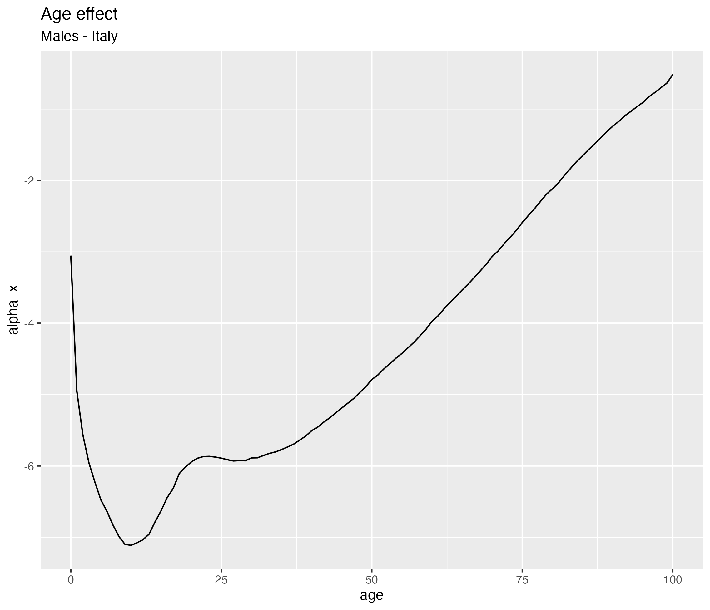
Parameter interpretation - \(\kappa_t\)
The basic Lee-Carter model \[\log(\lambda_{xt}) = \alpha_x + \beta_x\ \color{red}{\kappa_t} + \varepsilon_{xt}\]
- Captures:
- overall improvements in mortality
- medical progress
- public health changes
- overall improvements in mortality
👉 “the overall level of mortality in a given year”
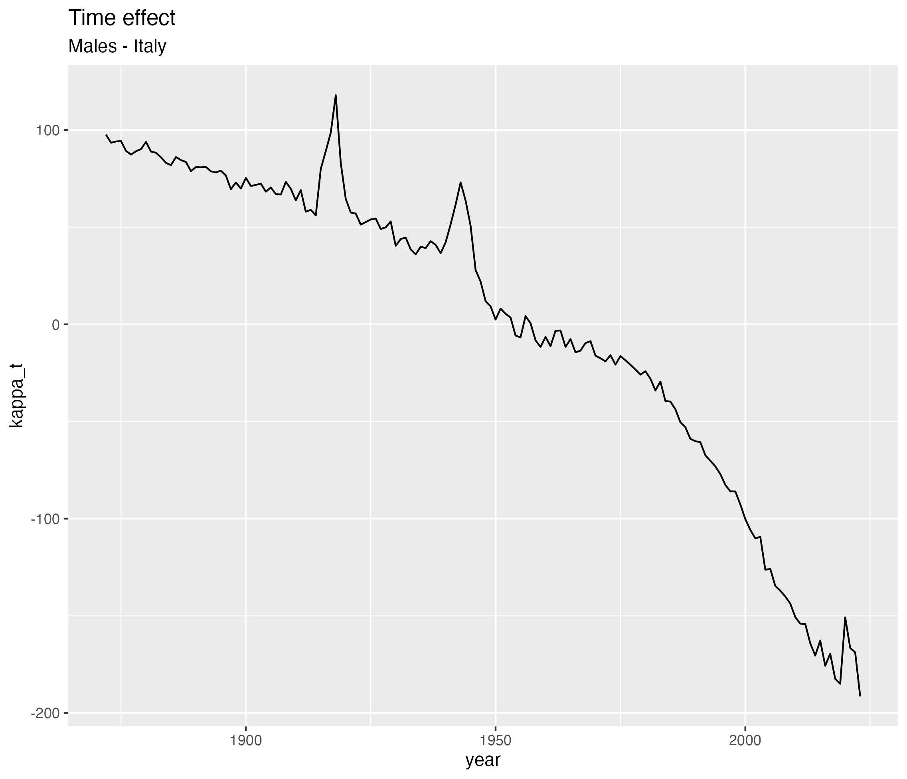
Parameter interpretation - \(\beta_t\)
The basic Lee-Carter model \[\log(\lambda_{xt}) = \alpha_x + \color{red}{\beta_x}\ \kappa_t + \varepsilon_{xt}\]
Measures how each age reacts to changes in \(\kappa_t\)
If:
- \(\beta_x\) large → mortality at age \(x\) changes a lot
- \(\beta_x\) small → little change over time
- \(\beta_x\) large → mortality at age \(x\) changes a lot
👉 “which ages benefit most from progress”
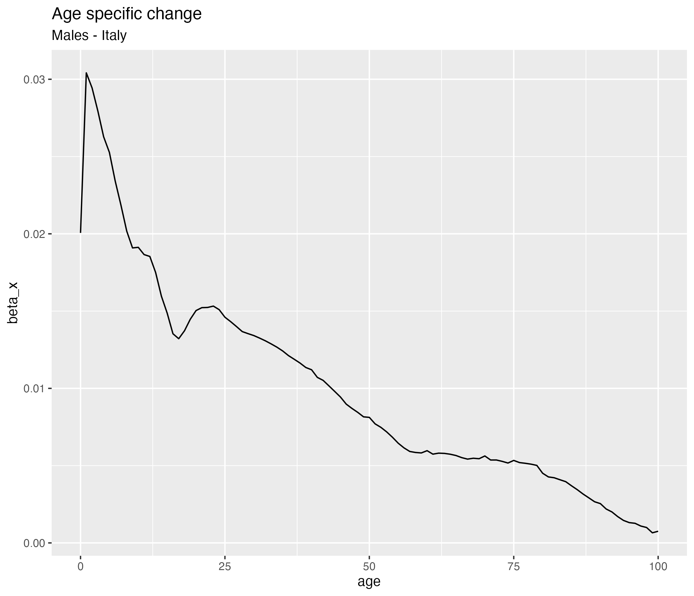
Identifiability Constraints
Model is not unique:
\[\alpha_x + \beta_x \kappa_t = \alpha_x + (c \beta_x)(\kappa_t / c)\]
So we impose constraints:
- \(\sum_t \kappa_t = 0\)
- \(\sum_x \beta_x = 1\)
👉 Ensures unique interpretation of parameters
Inference for Lee-Carter Model
The Lee-Carter model has classically been estimated in a frequentist setting using a singular value decomposition (SVD).
The R-packages demography, ilc or StoMoMo can be used to implement the original Lee-Carter model and some of its extensions.
How about Bayesian Inference?
Czado et al (2005) proposed to place the Lee-Carter model in a Bayesian framework. Wiśniowski et al. (2015) use MCMC.
How about INLA?
A Bayesian formulation of the Lee-Carter Model
Bayesian version of the Poisson Lee-Carter model
\[\begin{align*} Y_{xt} \mid \lambda_{xt} &\sim \text{Poisson}(E_{xt} \lambda_{xt})\ \log(\lambda_{xt}) &= \alpha_x + \beta_x \kappa_t + \epsilon_{xt} \end{align*}\] with
- \(\alpha_x \mid \tau_\alpha \sim \mathcal{N}(0, \tau_\alpha)\), for \(x=1, \ldots, N\).
- \(\beta_x \mid \tau_\beta \sim \mathcal{N}(0, \tau_\beta)\), for \(x=1, \ldots, N\), with \(\sum_x \beta_x = 1\)
- \(\kappa_t = \phi \cdot t + \kappa^\star_{t}\ \), \(\ t=1, \ldots, T\), where \({\kappa}^\star\) follows a RW1(\(\tau_\kappa\)) and \(\sum \kappa_t = 0\)
- \(\epsilon_t \mid \tau_\epsilon \sim \mathcal{N}(0, \tau_\epsilon)\)
- Priors on \(\tau_\alpha\), \(\tau_\beta\), \(\tau_\kappa\), \(\tau_\epsilon\).
Bayesian version of the Poisson Lee-Carter model
\[\begin{align*} Y_{xt} \mid \lambda_{xt} &\sim \text{Poisson}(E_{xt} \lambda_{xt})\ \log(\lambda_{xt}) &= \alpha_x + \beta_x \kappa_t + \epsilon_{xt} \end{align*}\] with
- \(\alpha_x \mid \tau_\alpha \sim \mathcal{N}(0, \tau_\alpha)\), for \(x=1, \ldots, N\).
- \(\beta_x \mid \tau_\beta \sim \mathcal{N}(0, \tau_\beta)\), for \(x=1, \ldots, N\), with \(\sum_x \beta_x = 1\)
- \(\kappa_t = \phi \cdot t + \kappa^\star_{t}\ \), \(\ t=1, \ldots, T\ \), where \({\kappa}^\star\) follows a RW1(\(\tau_\kappa\)) and \(\sum \kappa_t = 0\)
- \(\epsilon_t \mid \tau_\epsilon \sim \mathcal{N}(0, \tau_\epsilon)\)
- Priors on \(\tau_\alpha\), \(\tau_\beta\), \(\tau_\kappa\), \(\tau_\epsilon\).
Note: This is important if you want to do prediction ahead in time!
Bayesian version of the Poisson Lee-Carter model
\[\begin{align*} Y_{xt} \mid \lambda_{xt} &\sim \text{Poisson}(E_{xt} \lambda_{xt})\ \log(\lambda_{xt}) &= \alpha_x + \beta_x \kappa_t + \epsilon_{xt} \end{align*}\] with
- \(\alpha_x \mid \tau_\alpha \sim \mathcal{N}(0, \tau_\alpha)\), for \(x=1, \ldots, N\).
- \(\beta_x \mid \tau_\beta \sim \mathcal{N}(0, \tau_\beta)\), for \(x=1, \ldots, N\), with \(\sum_x \beta_x = 1\)
- \(\kappa_t = \phi \cdot t + \kappa^\star_{t}\ \), \(\ t=1, \ldots, T\), where \({\kappa}^\star\) follows a RW1(\(\tau_\kappa\)) and \(\sum \kappa_t = 0\)
- \(\epsilon_t \mid \tau_\epsilon \sim \mathcal{N}(0, \tau_\epsilon)\)
- Priors on \(\tau_\alpha\), \(\tau_\beta\), \(\tau_\kappa\), \(\tau_\epsilon\).
Does this model fit the INLA framework?
Is the Lee-Carter model suitable to INLA?
The model is: \[ \begin{align*} Y_{xt} \mid \lambda_{xt} &\sim \text{Poisson}(E_{xt} \lambda_{xt})\\ \log(\lambda_{xt}) & = \eta_{xt} = \alpha_x + \beta_x \kappa_t + \epsilon_{xt} \end{align*} \]
So we have:
- \(\mathbf{\theta} = (\tau_{\alpha},\tau_{\beta},\tau_{\kappa},\tau_{\epsilon})\) Precision parameters with non Gaussian prior
- \(\mathbf{u} = ( \mathbf{\alpha}, \mathbf{\beta}, \mathbf{\kappa}, \mathbf{\epsilon})\sim\mathcal{N}(0, \mathbf{Q}( \mathbf{\theta}))\)
- Likelihood: We do have conditional independence given \(\eta(\mathbf{u})\)
- \(\eta_{i}( \mathbf{u}) = \alpha_{x_i} + \beta_{x_i} \kappa_{t_i} + \epsilon_{(xt)_{i}}\) This is NOT a linear relationship!
The model fits almost..but not quite!
inlabru
The scottish version of INLA
What is inlabru?
inlabru is a high-level interface to R-INLA. Mainly designed by Finn Lindgrenn
Designed especially for: spatial and spatio-temporal models, point process models
Simplifies:
- model specification
- spatial integration
- mesh handling
- prediction workflows 😃
Works seamlessly with spatial objects (
sf, meshes, geometries)
inlabru and R-INLA run the exact same computations!
..but inlabru is easier (specially for spatial models!)
inlabru and R-INLA
Fitting a simple point process
R_INLA implementation
But what has this to do with the Lee Carter model?
Extending INLA to non-linear predictors
In addition to being a wrapper around R-INLA, inlabru extends the scope of INLA to models with non-linear predictors \(\tilde{\eta}(\mathbf{u})\).
💡 The idea 💡
- Linearize \(\tilde{\eta}(\mathbf{u})\) using a first-order Taylor expansion around \(\mathbf{u}_0\):
\[ \tilde{\eta}(\mathbf{u}) \approx \tilde{\eta}(\mathbf{u}_0) + f_{\text{linear}}(\mathbf{u}) = \bar{\eta}(\mathbf{u}) \]
- Run INLA for the linearized problem
- Iterate until convergence
- \(\tilde{\eta}(\mathbf{u}_0))\) close enough to \(\bar{\eta}(\mathbf{u_0})\)
Note
Note
For details:
https://arxiv.org/abs/2407.00791v1
Extending INLA to non-linear predictors
- The linearization is an approximation on top of the “usual” INLA approximation
- Accuracy will depend on the nature of the non-linearity around \(\mathbf{u}_0\) and the choice of convergence criteria.
- Greater care than usual is needed for the choice of priors.
Cognitive impairment across USA
with A. Riebler, M. Farina, A. Zajacova
Motivation
Motivation
Cognitive impairment is very costly for society!
Trends for cognitive health in the US are mixed
- Declining age-standardized dementia rates with greatest decreases in the U.S. South.
- Greater risk of cognitive impairment in the U.S. South
- Potential worsening of cognitive functioning among younger midlife adults.
Little is know about state-specific differences
Research questions
What are the state-level trends in cognitive dysfunction by age from 2008 to 2022?
Did this differ by those with and without a 4-year college degree (Bachelor’s)?
Data
American Community Survey (ACS) data from 2008 to 2022.
Sample size from 1.3 to 2.3 million persons
Response - Self-reported cognitive dysfunction
- “Because of a physical, mental, or emotional condition, do you have difficulty concentrating, remembering, or making decisions?”
Measures
- Age: 25-85 with 5-year age bands
- Education: completed a bachelor’s (BA+) degree or not (no BA)
- State of residence
American Community Survey
Continuous nationwide survey conducted by the U.S. Census Bureau
Stratified random sample of U.S. households
Collects demographic, social, economic, and housing data
Data gathered monthly via mail, phone, and in-person interviews
Samples about 3.5 million addresses each year
Survey weights are attached to each observation
Accounting for complex survey design
A three steps approach
Compute the Fay-Harriot (FH) estimate of prevalence for each state, age-class, year and education level
\(\hat{p}_{i} = \frac{\sum_i w_iy_i}{\sum_i w_i}\), include design weights (representative for the whole population)
Has an estimated variance \(\text{Var}(\hat{p}_i)\)
not smoothed in space and time
Transform prevalence and se to get Gaussian data \[ y_i = \text{logit}(\hat{p}_i)\sim\mathcal{N}(\eta_i, \text{Var}(\hat{p}_i)) \]
The model
We model “College” and “No College” separately.
\[ \eta_{xts} = \mu + \alpha_x + \beta_x\kappa_{t} +\omega_s \]
where
- \(\alpha_x\) is a age effect (IID)
- \(\beta_x\) is a age effect (IID)
- \(\kappa_t\) is a time effect, modeled as a RW1 with drift
- \(\omega_s\) is a state specific intercept
Results
Intercept
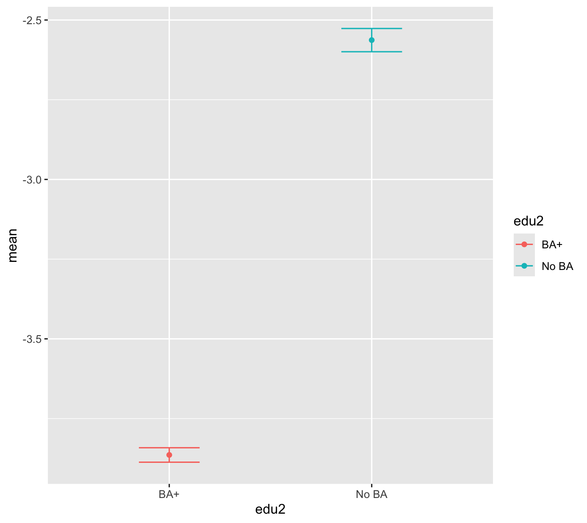
Age profile
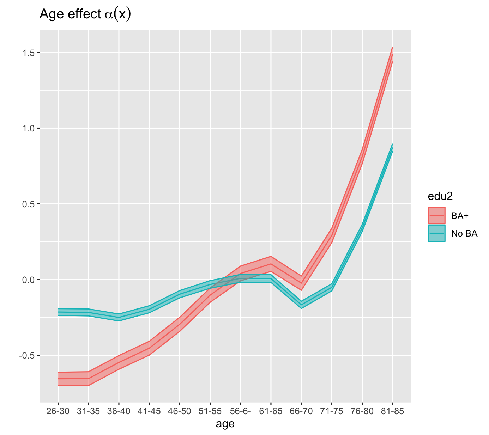
Results
Time trend
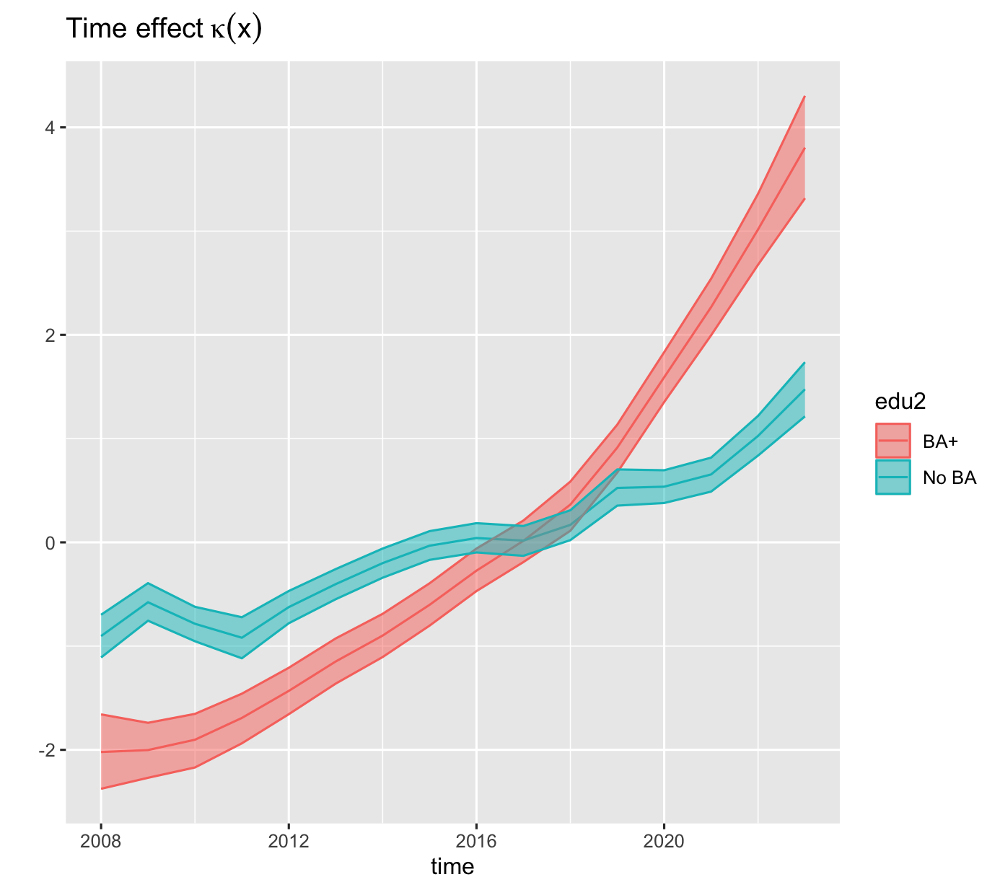
Age multiplier
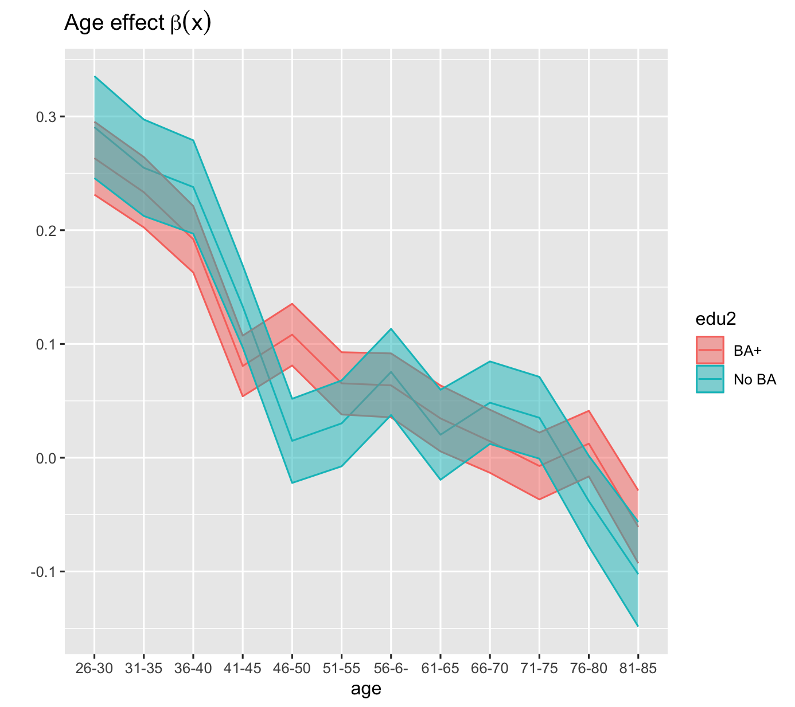
Results
State specific intercept
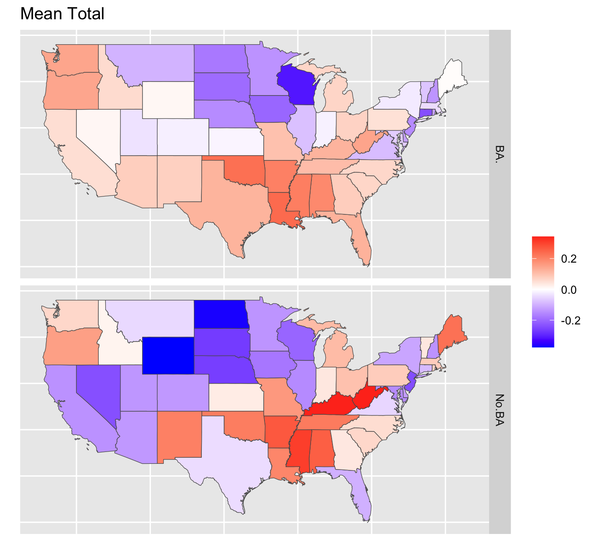
The way forward
- Include state specific trend
- Some of the estimated variances pf the FH estimator are zero…
Mortality in Italy
Fiori, Riebler, Martino (2026) Geographical Inequalities in Mortality by Age and Gender in Italy, 2002–2019: Insights from a Spatial Extension of the Lee-Carter Model - Spatial Demography
Italy as a case-study of mortality trends
- Some of the lowest mortality levels in Europe: life expectancy of 83.4 in 2023.
- Marked geographical differences, reflecting inequalities in wealth, educational level and employment opportunities.
- Slowdown of mortality improvements since 2010.
Documented gendered geography of mortality in the second half of the 20th century – surprisingly little attention to the geography of mortality in the 21st century!
Data
ISTAT series of deaths and population counts:
- by single year of age
- separately by gender
- for each of the 107 Provinces
- for the period 1999-2019.
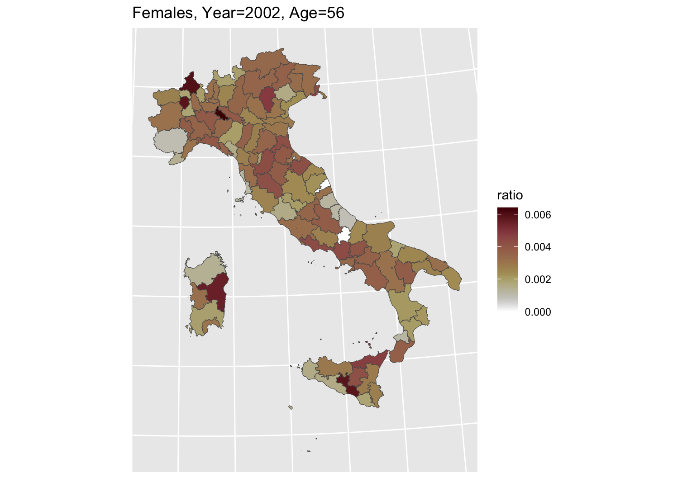
Good quality registers data – subject to random variability given the small size of the territorial units.
Research questions
The study contributes to understandings of geographical inequalities in mortality in the 21st century by asking:
How has gender- and age-specific mortality evolved over the last two decades?
How did mortality by age and gender vary at the provincial level?
And have geographical inequalities widened during the slowdown of survival improvement of the 2010s?
Model 1
Model 2
Model 1
We model males and females separately.
We assume the counts to be Poisson distributed \[ Y_{xts}|\lambda_{xts}\sim\text{Poisson}(E_{xts}e^{\lambda_{xts}}) \] with \[ \lambda_{xts} = \underbrace{\alpha_x + \beta_x\kappa_t + \epsilon_{xts}}_{1} + \underbrace{\omega_{sg_x}}_{2} \]
Traditional Lee-Carter model
Spatial effect: allowed to vary for 10 different age classe
- BYM2 model for each age class (
replicatefeature)
Model 2
\[ Y_{xts}|\lambda_{xts}\sim\text{Poisson}(E_{xts}e^{\lambda_{xts}}) \] with \[ \lambda_{xts} = \alpha_x + \beta_x\kappa_t + \omega_{s g_x p_t}+ \epsilon_{xts} \] with
\[ p_t = \left\{ \begin{aligned} 1 & \text{ for years 2002-2010}\\ 2 & \text{ for years 2011-2019}\\ \end{aligned} \right. \] This helps to capture different spatial trends in the two time periods.
1. How has gender- and age-specific mortality evolved over the last two decades?
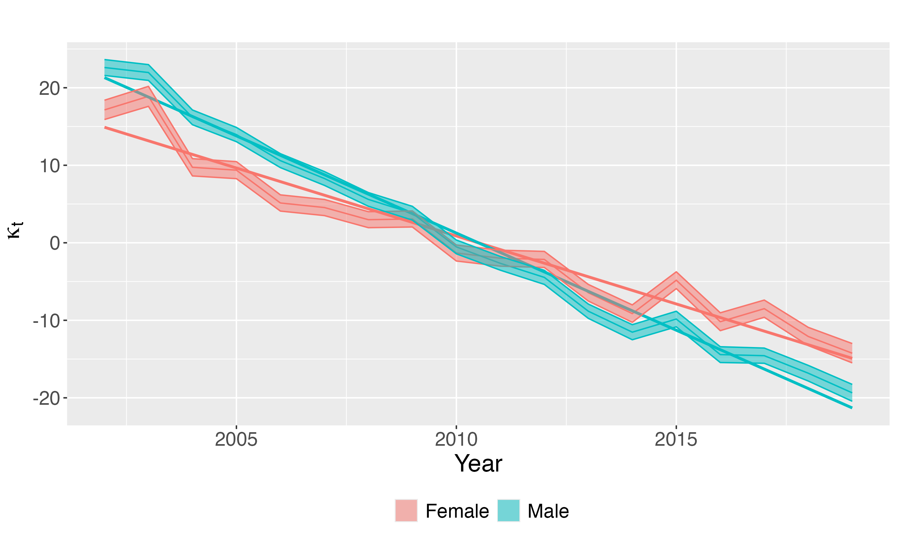
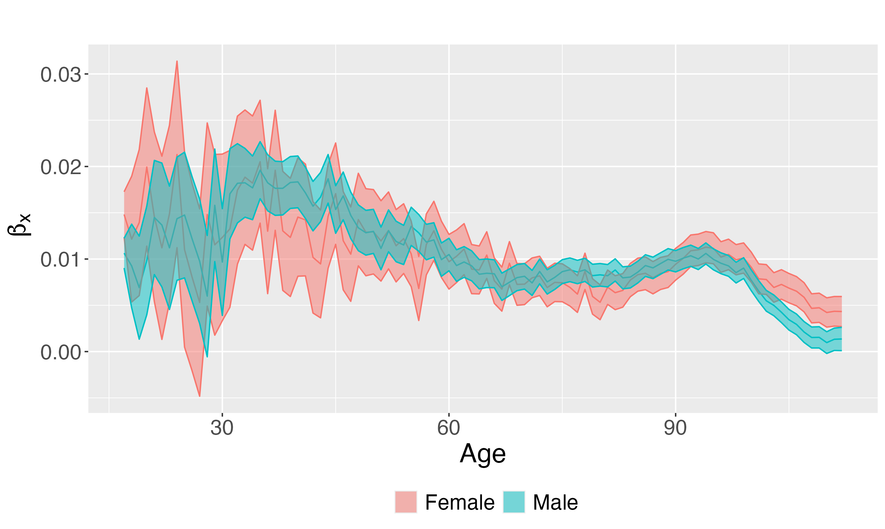
2. How does mortality by age and gender vary at the provincial level?
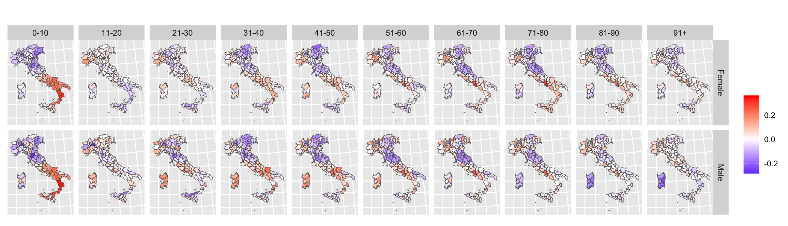
- And have geographical inequalities widened during the slowdown of survival improvement of the 2010s?
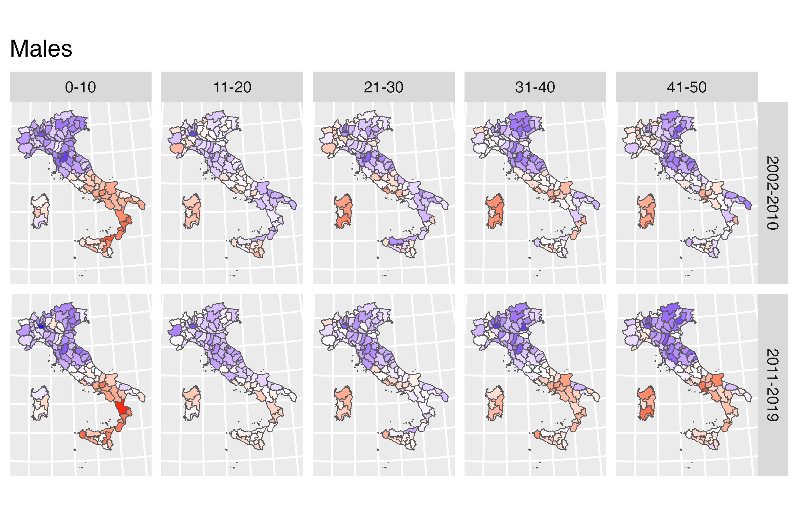
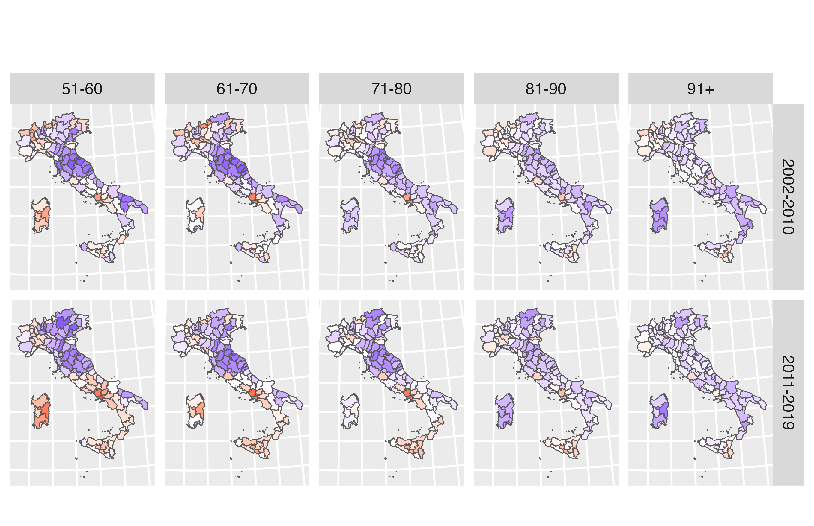
Take home message
- varying geographical patterns depending on the combinations of age and gender considered
- geographical variability higher among younger adult men and among older adult women, suggesting the influence of age- and sex-specific, context-dependent, risk factors.
- widening of geographical inequalities between the first and second period
Conclusion
Lee–Carter models provide a powerful framework to describe age-specific temporal dynamics. Many modern applications require extensions to account for spatial structure and complex data sources.
inlabruextends the INLA framework to non-linear predictors, making it possible to easily fit Bayesian Lee–Carter models.Spatial extensions help uncover evolving local inequalities and changing regional patterns over time.